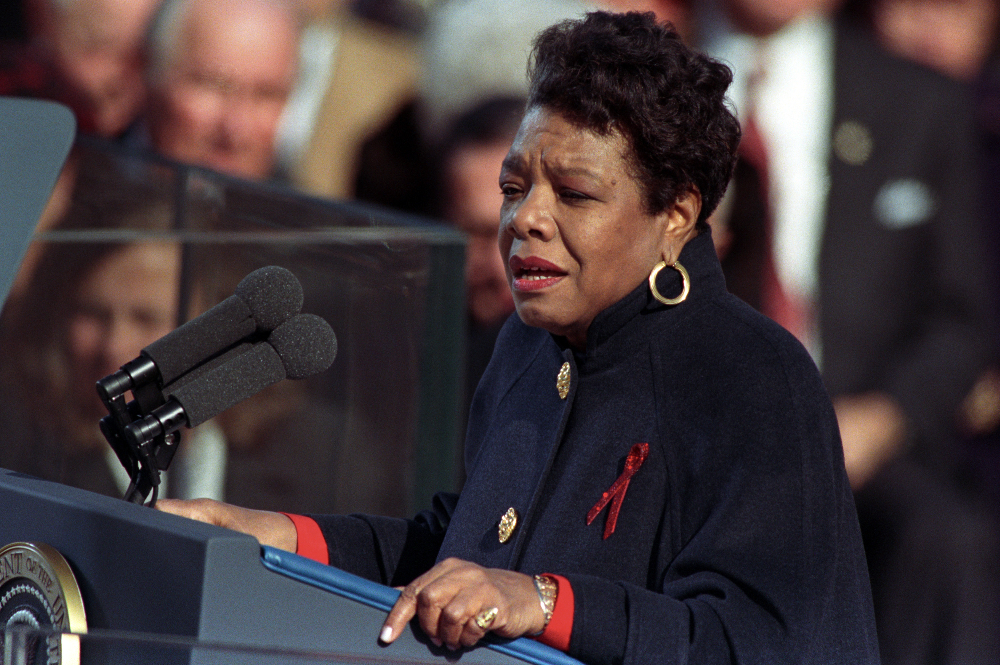

Maya Angelou
She was a poet whose work continues to be taught in classrooms today!

Fun Facts
- Birth place: St. Louis, Missouri
- Birth name: Marguerite Annie Johnson
- Father: Bailey Johnson, a doorman
- Mother: Vivian (Baxter) Johnson, a nurse
- Marriages: Paul de Feu (1973-1980, divorced); Tosh Angelos (1950-1952, divorced)
- Children: Clyde "Guy" Johnson, 1944
- Education: Attended California Labor School, 1942
- Author, poet, actor, singer, songwriter, dancer, playwright, historian, civil rights activist and teacher.
- Fluent in six languages: English, French, Spanish, Italian, Arabic and West African Fanti.
- First African-American female member of the Directors Guild of America.
- Studied dance with Pearl Primus in New York.
- Won three Grammy awards.
- Nominated for a Tony Award.
What were Maya Angelou's many roles?
- Writer: She is perhaps most famous for her best-selling, award-winning autobiographical book, I Know Why the Caged Bird Sings, about her upbringing in the South. The book was one of the first ever written by a black woman to garner widespread readership, according to The New York Times.
- Civil rights activist: Angelou was active in the Civil Rights movement and served as the northern coordinator for the Southern Christian Leadership Conference in 1959. Later, she became close with and worked with Malcolm X.
- Poet: She released her first collection of poems in 1971. She read one of her works, “On the Pulse of Morning,” at Bill Clinton's inauguration in 1993.
- Filmmaker: She wrote the screenplay for the 1972 film, Georgia, Georgia—the first script by a black woman to be made into a Hollywood movie. (You can see a clip here.) The movie was nominated for the Berlin Film Festival.
- Actor: She acted in the movies Calypso Heat Wave and How to Make an American Quilt, Smithsonian has written, and starred in plays including the Obie-winning ;The Blacks. For her performance in the 1977 television show Roots, she received an Emmy nomination.
- Dancer: She often danced in her stage roles; had an early stint as a cabaret performer in San Francisco; and was a dance partner of Alvin Ailey's, Howard University Library writes.
- Educator: She received around 30 honorary degrees, and lectured at universities across the country, from California to Kansas to North Carolina. At several schools, including Wake Forest University, Wichita State University and California State University, Sacramento, she served as a distinguished visiting professor.
Find a video biography of Maya Angelou here.